4 Bayesian Workflow
In this chapter we go through an artificial probem from beginning to end, starting with the (hypothetical) scenario and the (simulated) data and then fitting a series of Bayesian models in Stan and exploring them in R.
The other chapters of this book are focused on building Stan models. This chapter is a bit different in focusing on the Bayesian data analysis workflow of model building, checking, and expansion within R.
4.1 The problem
Background
Imagine that you are a statistician or data scientist working as an independent contractor. One of your clients is a company that owns many residential buildings throughout New York City. The property manager explains that they are concerned about the number of cockroach complaints that they receive from their buildings. Previously the company has offered monthly visits from a pest inspector as a solution to this problem. While this is the default solution of many property managers in NYC, the tenants are rarely home when the inspector visits, and so the manager reasons that this is a relatively expensive solution that is currently not very effective.
One alternative is to deploy long term bait stations. In this alternative, child and pet safe bait stations are installed throughout the apartment building. Cockroaches obtain quick acting poison from these stations and distribute it throughout the colony. The manufacturer of these bait stations provides some indication of the space-to-bait efficacy, but the manager suspects that this guidance was not calculated with NYC roaches in mind. NYC roaches, the manager rationalizes, have more hustle than traditional roaches; and NYC buildings are built differently than other common residential buildings in the US. This is particularly important as the unit cost for each bait station per year is high.
The goal
The manager wishes to employ your services to help them to find the optimal number of roach bait stations they should place in each of their buildings in order to minimize the number of cockroach complaints while also keeping expenditure on pest control affordable.
A subset of the company’s buildings have been randomly selected for an experiment:
At the beginning of each month, a pest inspector randomly places a number of bait stations throughout the building, without knowledge of the current cockroach levels in the building.
At the end of the month, the manager records the total number of cockroach complaints in that building.
The manager would like to determine the optimal number of bait stations (\(\textrm{traps}\)) that balances the lost revenue (\(\textrm{R}\)) that complaints generate with the all-in cost of maintaining the bait stations (\(\textrm{TC}\)).
Fortunately, Bayesian data analysis provides a coherent framework for us to tackle this problem.
Formally, we are interested in finding the number of bait stations that maximixes \[ \mbox{E}(R(\textrm{complaints}(\textrm{traps})) - \textrm{TC}(\textrm{traps})), \] where the expectation averages over the distribution of complaints, conditional on the number of bait stations installed.
The property manager would also, if possible, like to learn how these results generalize to buildings they haven’t treated so they can understand the potential costs of pest control at buildings they are acquiring as well as for the rest of their building portfolio.
As the property manager has complete control over the number of bait stations set, the random variable contributing to this expectation is the number of complaints given the number of bait stations. We will model the number of complaints as a function of the number of bait stations.
4.2 The data
The (simulated) data for this problem are in a file called
pest_data.RDS, representing data from 10 buildings in 12 successive
months, thus 120 data points in total. Let’s load the data and see
what the structure is:
'data.frame': 120 obs. of 14 variables:
$ mus : num 0.369 0.359 0.282 0.129 0.452 ...
$ building_id : int 37 37 37 37 37 37 37 37 37 37 ...
$ wk_ind : int 1 2 3 4 5 6 7 8 9 10 ...
$ date : Date, format: "2017-01-15" "2017-02-14" ...
$ traps : num 8 8 9 10 11 11 10 10 9 9 ...
$ floors : num 8 8 8 8 8 8 8 8 8 8 ...
$ sq_footage_p_floor : num 5149 5149 5149 5149 5149 ...
$ live_in_super : num 0 0 0 0 0 0 0 0 0 0 ...
$ monthly_average_rent: num 3847 3847 3847 3847 3847 ...
$ average_tenant_age : num 53.9 53.9 53.9 53.9 53.9 ...
$ age_of_building : num 47 47 47 47 47 47 47 47 47 47 ...
$ total_sq_foot : num 41192 41192 41192 41192 41192 ...
$ month : num 1 2 3 4 5 6 7 8 9 10 ...
$ complaints : num 1 3 0 1 0 0 4 3 2 2 ...These are the variables we will be using:
building_id: The unique building identifiertraps: The number of traps used in the building in that monthfloors: The number of floors in the buildinglive_in_super: An indicator for whether the building has a live-in superintendentmonthly_average_rent: The average monthly rent in the buildingaverage_tenant_age: The aerage age of the tenants in the buildingage_of_building: The age of the buildingtotal_sq_foot: The total square footage in the buildingmonth: Month of the yearcomplaints: Number of complaints in the building in that month
First, let’s see how many buildings we have data for:
[1] 10And make some plots: a histogram of the number of complaints in the 120 building-months in the data:

A scatterplot of complaints vs. bait stations, with each dot representing a building-month:

And the time series of bait stations and complaints for each building:
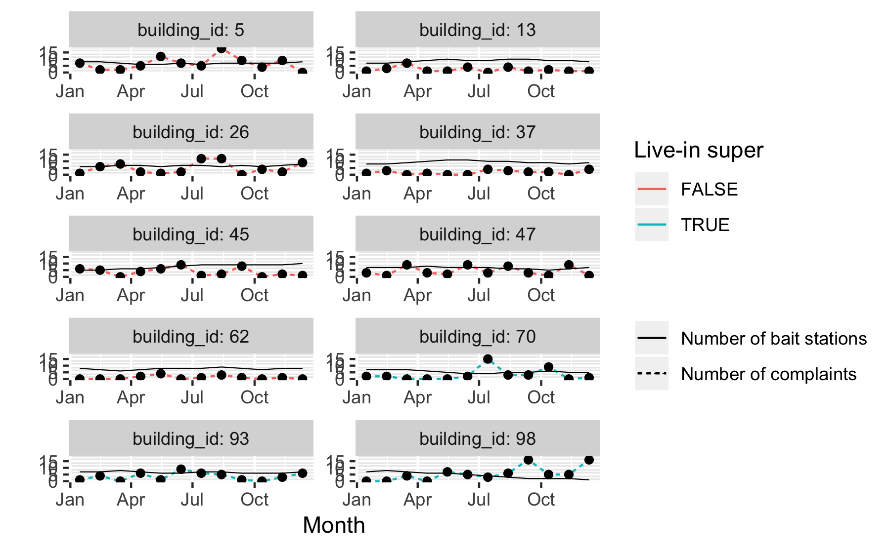
We will first just look at the association of the number of bait stations with the number of complaints, ignoring systamtic variation over time and across buildings (we’ll come back to those sources of variation later in the chapter). That requires only two variables, \(\textrm{complaints}\) and \(\textrm{traps}\).
How should we model the number of complaints? We will demonstrate using a Bayesian workflow of model building, model checking, and model improvement.
4.3 Modeling count data: Poisson distribution
We already know some rudimentary information about what we should expect. The number of complaints over a month should be either zero or a positive integer. The property manager tells us that it is possible but unlikely that number of complaints in a given month is zero. Occasionally there are a large number of complaints in a single month. A common way of modeling this sort of skewed, single bounded count data is as a Poisson random variable. One concern about modeling the outcome variable as Poisson is that the data may be over-dispersed, but we’ll start with the Poisson model and then check whether over-dispersion is a problem by comparing our model’s predictions to the data.
Model
Given that we have chosen a Poisson regression, we define the
likelihood to be the Poisson probability mass function over the number
of bait stations placed in the building, denoted below as
traps. This model assumes that the mean and variance of the outcome
variable complaints (number of complaints) is the same. We’ll
investigate whether this is a good assumption after we fit the model.
For building \(b = 1,\dots,10\) at time (month) \(t = 1,\dots,12\), we have
\[ \begin{aligned} \textrm{complaints}_{b,t} & \sim \textrm{Poisson}(\lambda_{b,t}) \\ \lambda_{b,t} & = \exp{(\eta_{b,t})} \\ \eta_{b,t} &= \alpha + \beta \, \textrm{traps}_{b,t} \end{aligned} \]
Let’s encode this probability model in a Stan program.
Writing our first Stan model
functions {
/*
* Alternative to poisson_log_rng() that
* avoids potential numerical problems during warmup
*/
int poisson_log_safe_rng(real eta) {
real pois_rate = exp(eta);
if (pois_rate >= exp(20.79))
return -9;
return poisson_rng(pois_rate);
}
}
data {
int<lower=1> N;
int<lower=0> complaints[N];
vector<lower=0>[N] traps;
}
parameters {
real alpha;
real beta;
}
model {
// weakly informative priors:
// we expect negative slope on traps and a positive intercept,
// but we will allow ourselves to be wrong
beta ~ normal(-0.25, 1);
alpha ~ normal(log(4), 1);
// poisson_log(eta) is more efficient and stable alternative to poisson(exp(eta))
complaints ~ poisson_log(alpha + beta * traps);
}
generated quantities {
int y_rep[N];
for (n in 1:N)
y_rep[n] = poisson_log_safe_rng(alpha + beta * traps[n]);
}Making sure our code is right
Before we fit the model to the data that have been given to us, we should check that our model works well with data that we have simulated ourselves. We’ll simulate data according to the model and then check that we can sufficiently recover the parameter values used in the simulation.
data {
int<lower=1> N;
real<lower=0> mean_traps;
}
model {
}
generated quantities {
int traps[N];
int complaints[N];
real alpha = normal_rng(log(4), 0.1);
real beta = normal_rng(-0.25, 0.1);
for (n in 1:N) {
traps[n] = poisson_rng(mean_traps);
complaints[n] = poisson_log_rng(alpha + beta * traps[n]);
}
}We can use the stan() function to compile and fit the model, but
here we will do the compilation and fitting in two stages to make the
steps more explicit.
We can use the stan() function to compile and fit the model, but
here we will do the compilation and fitting in two stages to
demonstrate what is really happening under the hood.
First we will compile the Stan program
(simple_poisson_regression_dgp.stan) that will generate the fake
data.
Now we can simulate the data by calling the sampling() function.
SAMPLING FOR MODEL 'simple_poisson_regression_dgp' NOW (CHAIN 1).
Chain 1: Iteration: 1 / 1 [100%] (Sampling)
Chain 1: Elapsed Time: 0 seconds (Warm-up)
Chain 1: 4.3e-05 seconds (Sampling)
Chain 1: 4.3e-05 seconds (Total)It is not necessary to supply the seed for the random number generator; we do it here so that the code is fully reproducible: Same seed, same random numbers, same output each time. (But we do not guarantee identical output under future versions of Stan, as various aspects of the program such as choice of starting points and adaptation rules can change.)
We can now extract the sampled data and look at its structure in R:
List of 5
$ traps : num [1, 1:120] 7 5 8 11 9 6 5 6 8 9 ...
..- attr(*, "dimnames")=List of 2
.. ..$ iterations: NULL
.. ..$ : NULL
$ complaints: num [1, 1:120] 0 1 0 0 0 0 0 0 1 0 ...
..- attr(*, "dimnames")=List of 2
.. ..$ iterations: NULL
.. ..$ : NULL
$ alpha : num [1(1d)] 1.29
..- attr(*, "dimnames")=List of 1
.. ..$ iterations: NULL
$ beta : num [1(1d)] -0.283
..- attr(*, "dimnames")=List of 1
.. ..$ iterations: NULL
$ lp__ : num [1(1d)] 0
..- attr(*, "dimnames")=List of 1
.. ..$ iterations: NULLFitting the model to the fake data
In order to pass the fake data to our Stan program using RStan, we
need to arrange the data into a named list. The names must match the
names used in the data block of the Stan program.
List of 3
$ N : int 120
$ traps : num [1:120] 7 5 8 11 9 6 5 6 8 9 ...
$ complaints: num [1:120] 0 1 0 0 0 0 0 0 1 0 ...Now that we have the simulated data we fit the model to see if we can
recover the alpha and beta parameters used in the simulation.
Assessing parameter recovery
We can compare the known values of the parameters to their posterior distributions in the model fit to simulated data:

The posterior uncertainties are large here, but the true values are well within the inferential ranges. If we did the simulation with many more observations the parameters would be estimated much more precisely while still including the true values (assuming the model has been programmed correctly and the simulations have converged).
We should also check if the y_rep datasets (in-sample predictions)
that we coded in the generated quantities block are similar to the
y (complaints) values we conditioned on when fitting the model. (The
bayesplot package
vignettes
are a good resource on this topic.)
Here is a plot of the density estimate of the observed data compared
to 200 of the y_rep datasets:
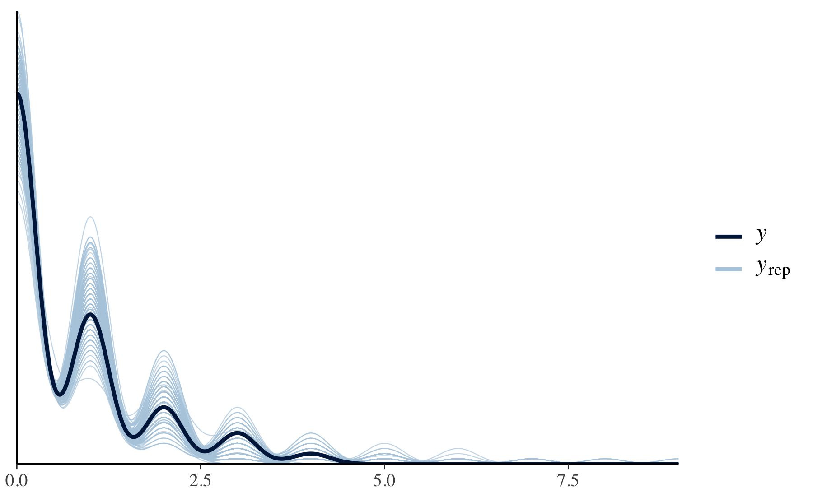
In the plot above we have the kernel density estimate of the observed
data (\(y\), thicker curve) and 200 simulated data sets (\(y_{rep}\), thin
curves) from the posterior predictive distribution. If the model fits
the data well, as it does here, there is little difference between the
observed dataset and the simulated datasets.
Another plot we can make for count data is a rootogram. This is a plot of the expected counts (continuous line) vs the observed counts (blue histogram). We can see the model fits well because the observed histogram matches the expected counts relatively well.

Fiting with the data supplied to us
To fit the model to the data given to us, we first create a list to
pass to Stan using the variables in the pest_data dataframe:
As we have already compiled the model, we can jump straight to sampling from it.
and printing the parameters:
Inference for Stan model: simple_poisson_regression.
4 chains, each with iter=2000; warmup=1000; thin=1;
post-warmup draws per chain=1000, total post-warmup draws=4000.
mean se_mean sd 2.5% 25% 50% 75% 98% n_eff Rhat
alpha 2.57 0 0.15 2.26 2.48 2.58 2.68 2.87 1044 1
beta -0.19 0 0.02 -0.24 -0.21 -0.19 -0.18 -0.15 1038 1
Samples were drawn using NUTS(diag_e) at Thu Nov 29 19:08:38 2018.
For each parameter, n_eff is a crude measure of effective sample size,
and Rhat is the potential scale reduction factor on split chains (at
convergence, Rhat=1).The coefficient \(\beta\) is estimated to be negative, impliying that a higher number of bait stations set in a building appears to be associated with fewer complaints about cockroaches in the following month.
But we still need to consider how well the model fits.
Posterior predictive checking

The replicated datasets are not as dispersed as the observed data and don’t seem to capture the rate of zeroes in the observed data. The Poisson model may not be a good fit for these data.
Let’s explore this further by looking directly at the proportion of zeroes in the real data and predicted data.
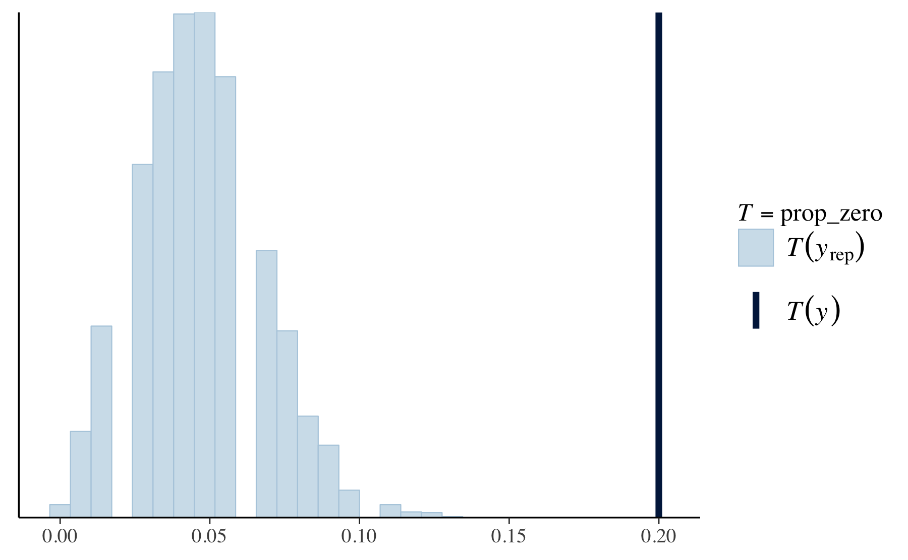 The plot above shows the observed proportion of zeroes (thick vertical line) and a histogram of the proportion of zeroes in each of the simulated data sets. It is clear that the model does not capture this feature of the data well at all.
This next plot is a plot of the standardised residuals of the observed vs predicted number of complaints.

As you can see here, it looks as though we have more positive residuals than negative, which indicates that the model tends to underestimate the number of complaints that will be received.
The rootogram is another useful plot to compare the observed vs expected number of complaints. This is a plot of the expected counts (continuous line) vs the observed counts (blue histogram):
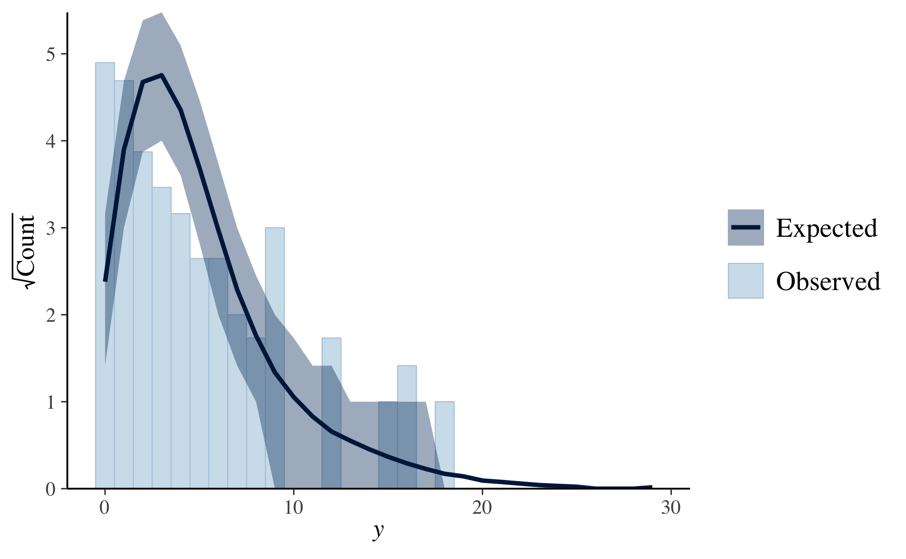
If the model was fitting well these would be relatively similar, but this figure shows that the number of complaints is underestimated if there are few complaints, over-estimated for medium numbers of complaints, and underestimated if there are a large number of complaints.
We can also view how the predicted number of complaints varies with the number of bait stations. The model doesn’t seem to fully capture the data.
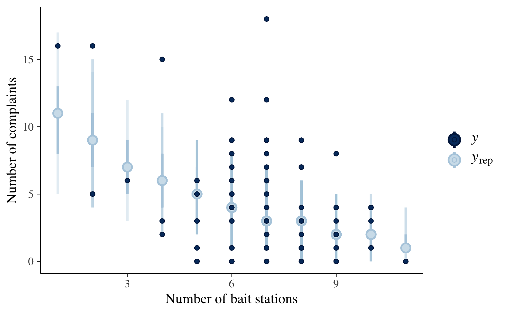
Specifically, the model doesn’t capture the tails of the observed data well.
4.4 Expanding the model: multiple predictors
Modeling the relationship between complaints and bait stations is the simplest model. We can expand the model, however, in a few ways that will be beneficial for our client. Moreover, the manager has told us that they expect there are a number of other reasons that one building might have more roach complaints than another.
Interpretability
Currently, our model’s mean parameter is a rate of complaints per 30 days, but we’re modeling a process that occurs over an area as well as over time. We have the square footage of each building, so if we add that information into the model, we can interpret our parameters as a rate of complaints per square foot per 30 days.
\[ \begin{aligned} \textrm{complaints}_{b,t} & \sim \textrm{Poisson}(\textrm{sq}\_\textrm{foot}_b\,\lambda_{b,t}) \\ \lambda_{b,t} & = \exp{(\eta_{b,t} )} \\ \eta_{b,t} &= \alpha + \beta \, \textrm{traps}_{b,t} \end{aligned} \]
The term \(\textrm{sq}\_\textrm{foot}\) is called an exposure term. If we log the term, we can put it in \(\eta_{b,t}\):
\[ \begin{aligned} \textrm{complaints}_{b,t} & \sim \textrm{Poisson}(\lambda_{b,t}) \\ \lambda_{b,t} & = \exp{(\eta_{b,t} )} \\ \eta_{b,t} &= \alpha + \beta \, \textrm{traps}_{b,t} + \textrm{log}\_\textrm{sq}\_\textrm{foot}_b \end{aligned} \]
A quick check finds a relationship between the square footage of the building and the number of complaints received:

Using the property manager’s intuition, we include two extra pieces of information we know about the building - the (log of the) square floor space and whether there is a live in super or not - into both the simulated and real data.
Stan program for Poisson multiple regression
Now we need a new Stan model that uses multiple predictors.
functions {
/*
* Alternative to poisson_log_rng() that
* avoids potential numerical problems during warmup
*/
int poisson_log_safe_rng(real eta) {
real pois_rate = exp(eta);
if (pois_rate >= exp(20.79))
return -9;
return poisson_rng(pois_rate);
}
}
data {
int<lower=1> N;
int<lower=0> complaints[N];
vector<lower=0>[N] traps;
vector<lower=0,upper=1>[N] live_in_super;
vector[N] log_sq_foot; // exposure term
}
parameters {
real alpha;
real beta;
real beta_super;
}
model {
beta ~ normal(-0.25, 1);
beta_super ~ normal(-0.5, 1);
alpha ~ normal(log(4), 1);
complaints ~ poisson_log(alpha + beta * traps + beta_super * live_in_super + log_sq_foot);
}
generated quantities {
int y_rep[N];
for (n in 1:N)
y_rep[n] = poisson_log_safe_rng(alpha + beta * traps[n] + beta_super * live_in_super[n]
+ log_sq_foot[n]);
}Simulate fake data with multiple predictors
SAMPLING FOR MODEL 'multiple_poisson_regression_dgp' NOW (CHAIN 1).
Chain 1: Iteration: 1 / 1 [100%] (Sampling)
Chain 1: Elapsed Time: 0 seconds (Warm-up)
Chain 1: 6.3e-05 seconds (Sampling)
Chain 1: 6.3e-05 seconds (Total)Now pop that simulated data into a list ready for Stan.
And then compile and fit the model we wrote for the multiple regression.
Then compare these parameters to the true parameters:
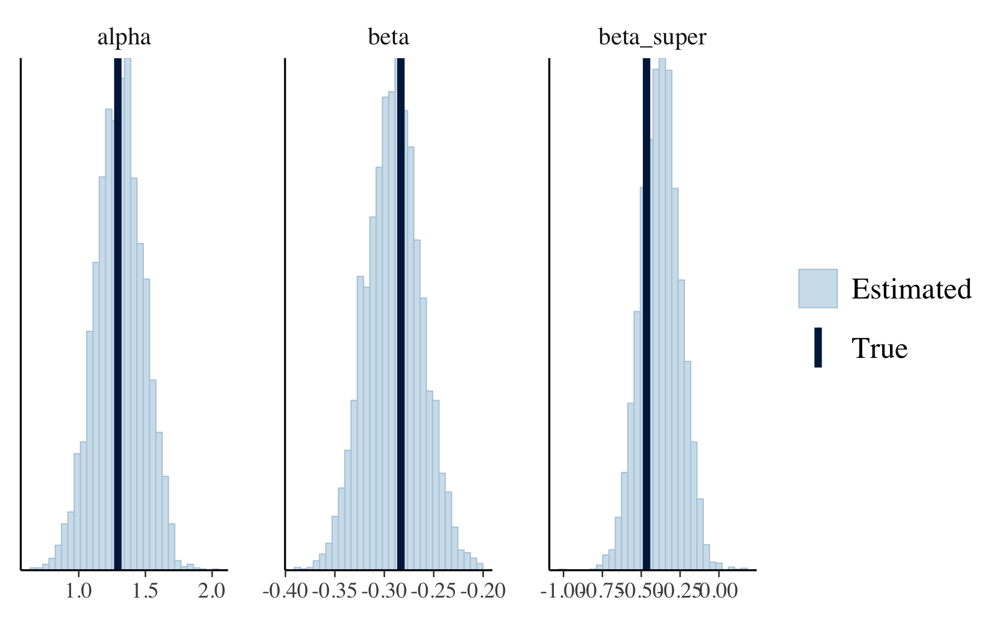
Now that wee’ve recovered the parameters from the data we have simulated, we’re ready to fit the data that were given to us.
Fit the data given to us
We explore the fit by comparing the data to posterior predictive simulations:
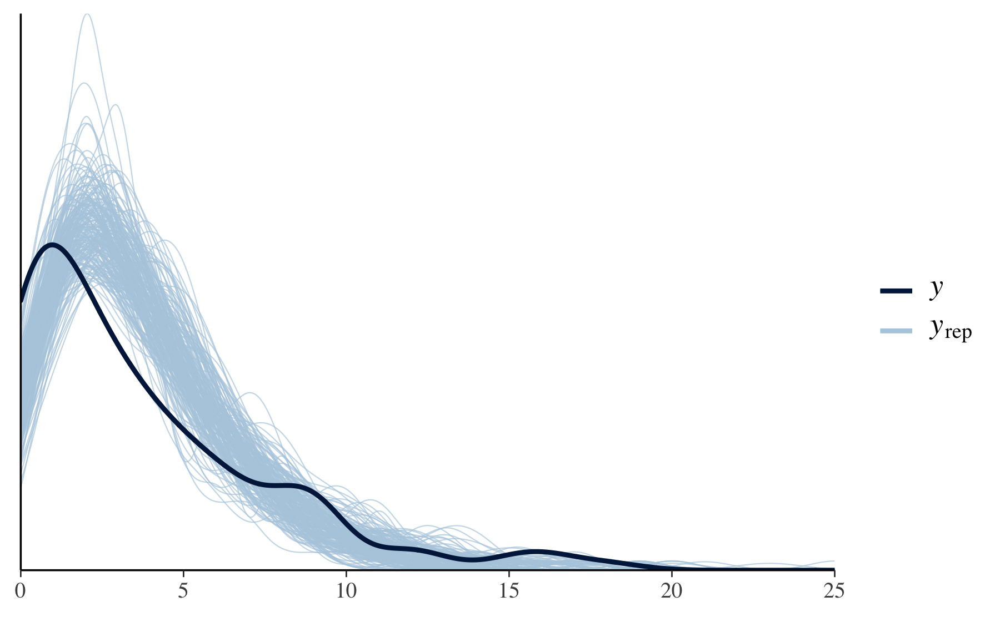 This again looks like we haven’t captured the smaller counts well, nor have we captured the larger counts.

We’re still severely underestimating the proportion of zeroes in the data. Ideally this vertical line would fall somewhere within the histogram.
We can also plot uncertainty intervals for the predicted complaints for different numbers of bait stations.
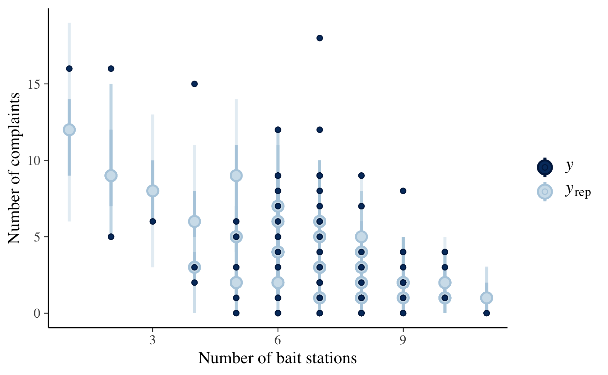
We’ve increased the tails a bit more at the larger numbers of bait stations but we still have some large observed numbers of complaints that the model would consider extremely unlikely events.
4.5 Modeling count data with the negative binomial distribution
When we considered modelling the data using a Poisson, we saw that the model didn’t appear to fit as well to the data as we would like. In particular the model underpredicted low and high numbers of complaints, and overpredicted the medium number of complaints. This is one indication of overdispersion, where the variance is larger than the mean. A Poisson model doesn’t fit overdispersed count data well because the same parameter \(\lambda\), controls both the expected counts and the variance of these counts. The natural alternative to this is the negative binomial model:
\[ \begin{aligned} \mathrm{complaints}_{b,t} & \sim \mathrm{Neg-Binomial}(\lambda_{b,t}, \phi) \\ \lambda_{b,t} & = \exp(\eta_{b,t}) \\ \eta_{b,t} & = \alpha + \beta \, \mathrm{traps}_{b,t} + \beta_{\mathrm{super}} \, \mathrm{super}_{b} + \mathrm{log}\_\textrm{sq}\_\textrm{foot}_{b} \end{aligned} \]
In Stan the negative binomial mass function we’ll use has the signature
neg_binomial_2_log(ints y, reals eta, reals phi)Like the poisson_log function, this negative binomial mass function
that is parameterized in terms of its log-mean, \(\eta\), but it also
has a precision \(\phi\) such that
\[ \mbox{E}[y] \, = \lambda = \exp(\eta) \]
\[ \text{Var}[y] = \lambda + \lambda^2/\phi = \exp(\eta) + \exp(\eta)^2 / \phi. \]
As \(\phi\) gets larger the term \(\lambda^2 / \phi\) approaches zero and so the variance of the negative-binomial approaches \(\lambda\); that is, the negative-binomial gets closer and closer to the Poisson.
Stan program for negative-binomial regression
functions {
/*
* Alternative to neg_binomial_2_log_rng() that
* avoids potential numerical problems during warmup
*/
int neg_binomial_2_log_safe_rng(real eta, real phi) {
real gamma_rate = gamma_rng(phi, phi / exp(eta));
if (gamma_rate >= exp(20.79))
return -9;
return poisson_rng(gamma_rate);
}
}
data {
int<lower=1> N;
vector<lower=0>[N] traps;
vector<lower=0,upper=1>[N] live_in_super;
vector[N] log_sq_foot;
int<lower=0> complaints[N];
}
parameters {
real alpha;
real beta;
real beta_super;
real<lower=0> inv_phi;
}
transformed parameters {
real phi = inv(inv_phi);
}
model {
alpha ~ normal(log(4), 1);
beta ~ normal(-0.25, 1);
beta_super ~ normal(-0.5, 1);
inv_phi ~ normal(0, 1);
complaints ~ neg_binomial_2_log(alpha + beta * traps + beta_super * live_in_super
+ log_sq_foot, phi);
}
generated quantities {
int y_rep[N];
for (n in 1:N)
y_rep[n] = neg_binomial_2_log_safe_rng(alpha + beta * traps[n] +
beta_super * live_in_super[n] + log_sq_foot[n], phi);
}Fake data fit: Multiple negative-binomial regression
We’re going to generate one draw from the fake data model so we can use the data to fit our model and compare the known values of the parameters to the posterior density of the parameters.
Create a dataset to feed into the Stan model.
Compile the inferential model.
Now we run our NB regression over the fake data and extract the samples to examine posterior predictive checks and to check whether we’ve sufficiently recovered our known parameters, \(\text{alpha}\) \(\texttt{beta}\), .
Construct the vector of true values from your simulated dataset and compare to the recovered parameters. 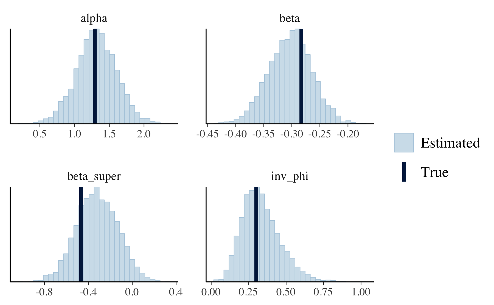
Fiting to the given data and checking the fit
Let’s look at our predictions vs. the data.
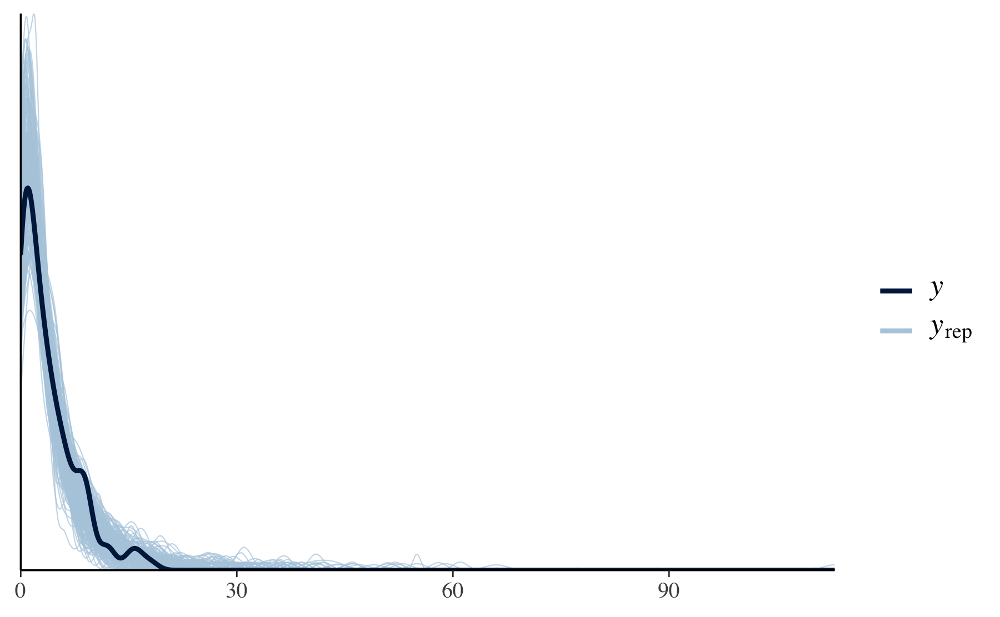
It appears that our model now captures both the number of small counts better as well as the tails.
Let’s check if the negative binomial model does a better job capturing the number of zeroes:

These look OK, but let’s look at the standardized residual plot.

Looks OK, but we still have some large standardized residuals. This might be because we are currently ignoring that the data are clustered by buildings, and that the probability of roach issue may vary substantially across buildings.

The rootogram now looks much more plausible. We can tell this because now the expected number of complaints matches much closer to the observed number of complaints. However, we still have some larger counts that appear to be outliers for the model.
Check predictions by number of bait stations:

We haven’t used the fact that the data are clustered by building yet. A posterior predictive check might elucidate whether it would be a good idea to add the building information into the model.
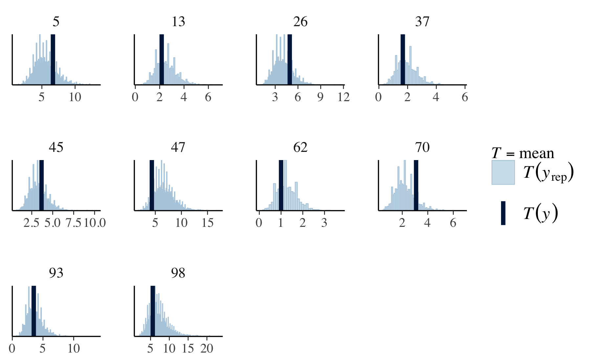
We’re getting plausible predictions for most building means but some are estimated better than others and some have larger uncertainties than we might expect. If we explicitly model the variation across buildings we may be able to get much better estimates.
4.6 Hierarchical modeling
Modeling varying intercepts for each building
Let’s add a hierarchical intercept parameter, \(\alpha_b\) at the building level to our model.
\[ \text{complaints}_{b,t} \sim \text{Neg-Binomial}(\lambda_{b,t}, \phi) \\ \lambda_{b,t} = \exp{(\eta_{b,t})} \\ \eta_{b,t} = \mu_b + \beta \, {\rm traps}_{b,t} + \beta_{\rm super}\, {\rm super}_b + \text{log}\_\textrm{sq}\_\textrm{foot}_b \\ \mu_b \sim \text{normal}(\alpha, \sigma_{\mu}) \]
In our Stan model, \(\mu_b\) is the \(b\)-th element of the vector \(\texttt{mu}\) which has one element per building.
One of our predictors varies only by building, so we can rewrite the above model more efficiently like so:
\[ \eta_{b,t} = \mu_b + \beta \, {\rm traps}_{b,t} + \text{log}\_\textrm{sq}\_\textrm{foot}_b\\ \mu_b \sim \text{normal}(\alpha + \beta_{\text{super}} \, \text{super}_b , \sigma_{\mu}) \]
We have more information at the building level as well, like the
average age of the residents, the average age of the buildings, and
the average per-apartment monthly rent so we can add that data into a
matrix called building_data, which will have one row per building
and four columns:
live_in_superage_of_buildingaverage_tentant_agemonthly_average_rent
We’ll write the Stan model like:
\[ \eta_{b,t} = \alpha_b + \beta \, {\rm traps} + \text{log}\_\textrm{sq}\_\textrm{foot}\\ \mu \sim \text{normal}(\alpha + \texttt{building}\_\textrm{data} \, \zeta, \,\sigma_{\mu}) \]
Preparation for building data for hierarchical modeling
We’ll need to do some more data prep before we can fit our models. Firstly to use the building variable in Stan we will need to transform it from a factor variable to an integer variable.
Compile and fit the hierarchical model
Let’s compile the model.
Fit the model to data.
Diagnostics
We get a bunch of warnings from Stan about divergent transitions, which is an indication that there may be regions of the posterior that have not been explored by the Markov chains.
Divergences are discussed in more detail in the course slides as well as the bayesplot (MCMC diagnostics vignette)[http://mc-stan.org/bayesplot/articles/visual-mcmc-diagnostics.html] and A Conceptual Introduction to Hamiltonian Monte Carlo.
In this example we will see that we have divergent transitions because we need to reparameterize our model. We will retain the overall structure of the model but transform some of the parameters so that it is easier for Stan to sample from the parameter space. Before we go through exactly how to do this reparameterization, we will first go through what indicates that this is something that reparameterization will resolve. We will go through:
- Examining the fitted parameter values, including the effective sample size 2. Traceplots and scatterplots that reveal particular patterns in locations of the divergences.
First let’s extract the fits from the model.
Then we print the fits for the parameters that are of most interest.
Inference for Stan model: hier_NB_regression.
4 chains, each with iter=4000; warmup=2000; thin=1;
post-warmup draws per chain=2000, total post-warmup draws=8000.
mean se_mean sd 2.5% 25% 50% 75% 98% n_eff Rhat
sigma_mu 0.26 0.01 0.16 0.06 0.14 0.23 0.34 0.67 967 1
beta -0.23 0.00 0.06 -0.36 -0.27 -0.23 -0.19 -0.11 804 1
alpha 1.26 0.02 0.45 0.40 0.96 1.27 1.57 2.16 799 1
phi 1.58 0.01 0.34 1.01 1.34 1.53 1.76 2.39 3420 1
mu[1] 1.28 0.02 0.57 0.16 0.89 1.28 1.67 2.38 913 1
mu[2] 1.23 0.02 0.55 0.13 0.86 1.23 1.60 2.33 957 1
mu[3] 1.42 0.02 0.50 0.44 1.08 1.41 1.74 2.44 903 1
mu[4] 1.46 0.02 0.50 0.48 1.11 1.46 1.80 2.43 861 1
mu[5] 1.09 0.01 0.44 0.24 0.79 1.08 1.38 1.94 1123 1
mu[6] 1.17 0.02 0.50 0.18 0.83 1.17 1.50 2.14 859 1
mu[7] 1.47 0.02 0.54 0.42 1.11 1.47 1.83 2.52 898 1
mu[8] 1.26 0.01 0.43 0.42 0.97 1.25 1.55 2.14 1212 1
mu[9] 1.41 0.02 0.58 0.25 1.02 1.41 1.79 2.53 952 1
mu[10] 0.87 0.01 0.38 0.15 0.61 0.87 1.13 1.59 1110 1
Samples were drawn using NUTS(diag_e) at Thu Nov 29 19:12:39 2018.
For each parameter, n_eff is a crude measure of effective sample size,
and Rhat is the potential scale reduction factor on split chains (at
convergence, Rhat=1).You can see that the effective samples are low for many of the parameters relative to the total number of samples. This alone isn’t indicative of the need to reparameterize, but it indicates that we should look further at the trace plots and pairs plots. First let’s look at the traceplots to see if the divergent transitions form a pattern.
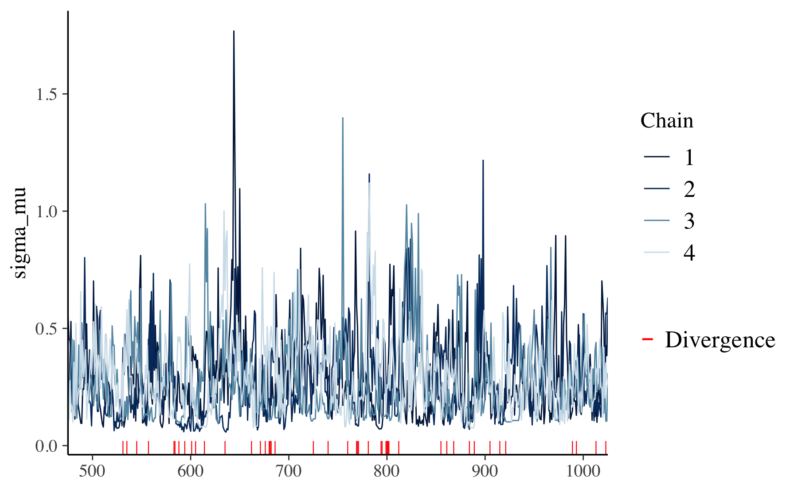
Looks as if the divergent parameters, the little red bars underneath the traceplots correspond to samples where the sampler gets stuck at one parameter value for \(\sigma_\mu\).
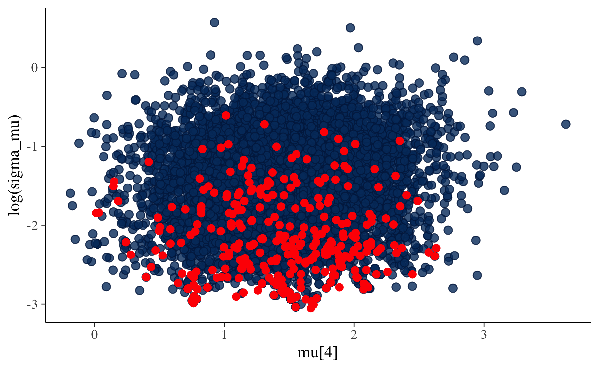
What we have here is a cloud-like shape, with most of the divergences clustering towards the bottom. We’ll see a bit later that we actually want this to look more like a funnel than a cloud, but the divergences are indicating that the sampler can’t explore the narrowing neck of the funnel.
One way to see why we should expect some version of a funnel is to look at some simulations from the prior, which we can do without MCMC and thus with no risk of sampling problems:

If the data are at all informative we shouldn’t expect the posterior to look exactly like the prior. But unless the data are highly informative about the parameters and the posterior concentrates away from the narrow neck of the funnel, the sampler is going to have to confront the funnel geometry. (See the Visual MCMC Diagnostics vignette for more on this.)
Another way to look at the divergences is via a parallel coordinates plot:
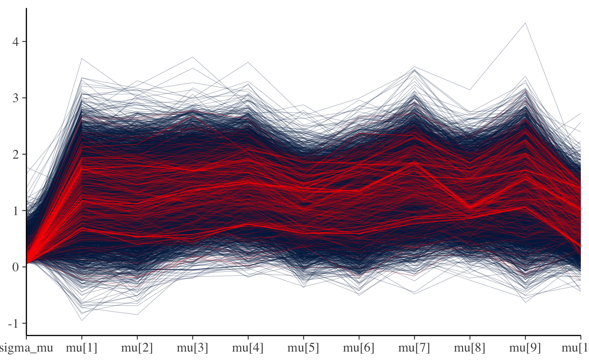
Again, we see evidence that our problems concentrate when sigma_mu is small.
Reparameterizing and rechecking diagnostics
Instead, we should use the non-centered parameterization for
\(\mu_b\). We define a vector of auxiliary variables in the parameters
block, mu_raw that is given a \(\mathrm{normal}(0,1)\) prior in the
model block. We then make \(\texttt{mu}\) a transformed parameter: We
can reparameterize the random intercept \(\mu_b\), which is distributed:
\[ \mu_b \sim \text{normal}(\alpha + \texttt{building}\_\textrm{data} \, \zeta, \sigma_{\mu}) \]
transformed parameters {
vector[J] mu;
mu = alpha + building_data * zeta + sigma_mu * mu_raw;
}This gives \(\texttt{mu}\) a \(\text{normal}(\alpha + \texttt{building}\_\textrm{data}\, \zeta, \sigma_\mu)\) distribution, but it
decouples the dependence of the density of each element of
\(\texttt{mu}\) from sigma_mu (\(\sigma_\mu\)).
hier_NB_regression_ncp.stan uses the non-centered parameterization for
\(\texttt{mu}\). We will examine the effective sample size of the fitted
model to see whether we’ve fixed the problem with our
reparameterization.
Compile the model.
Fit the model to the data.
Examining the fit of the new model
Inference for Stan model: hier_NB_regression_ncp.
4 chains, each with iter=2000; warmup=1000; thin=1;
post-warmup draws per chain=1000, total post-warmup draws=4000.
mean se_mean sd 2.5% 25% 50% 75% 98% n_eff Rhat
sigma_mu 0.22 0.01 0.17 0.01 0.10 0.19 0.31 0.66 1075 1
beta -0.23 0.00 0.06 -0.35 -0.27 -0.23 -0.19 -0.10 2036 1
alpha 1.25 0.01 0.44 0.37 0.97 1.25 1.54 2.13 2093 1
phi 1.59 0.01 0.36 1.01 1.33 1.54 1.79 2.40 4615 1
mu[1] 1.27 0.01 0.55 0.17 0.93 1.27 1.63 2.34 2103 1
mu[2] 1.22 0.01 0.54 0.13 0.87 1.22 1.57 2.28 2129 1
mu[3] 1.39 0.01 0.50 0.41 1.05 1.39 1.72 2.40 2505 1
mu[4] 1.42 0.01 0.49 0.47 1.10 1.41 1.75 2.39 2406 1
mu[5] 1.07 0.01 0.42 0.26 0.80 1.07 1.35 1.91 2398 1
mu[6] 1.18 0.01 0.49 0.20 0.85 1.19 1.51 2.13 2176 1
mu[7] 1.46 0.01 0.53 0.41 1.11 1.45 1.79 2.52 2372 1
mu[8] 1.23 0.01 0.44 0.37 0.93 1.22 1.53 2.11 2704 1
mu[9] 1.42 0.01 0.58 0.28 1.04 1.42 1.79 2.54 2074 1
mu[10] 0.86 0.01 0.37 0.17 0.61 0.85 1.10 1.62 2822 1
Samples were drawn using NUTS(diag_e) at Thu Nov 29 19:13:39 2018.
For each parameter, n_eff is a crude measure of effective sample size,
and Rhat is the potential scale reduction factor on split chains (at
convergence, Rhat=1).This has improved the effective sample sizes of \(\texttt{mu}\). We extract the parameters to run our usual posterior predictive checks.


The marginal plot, again:
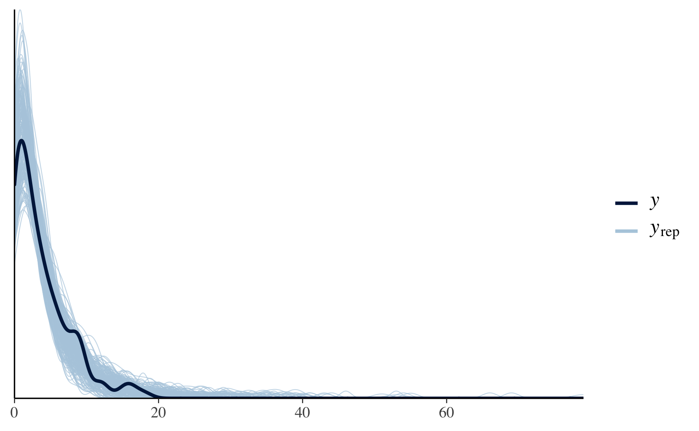
This looks good. If we’ve captured the building-level means well, then the posterior distribution of means by building should match well with the observed means of the quantity of building complaints by month.

We weren’t doing terribly with the building-specific means before, but now they are all well captured by our model. The model is also able to do a decent job estimating within-building variability:

Predictions by number of bait stations:
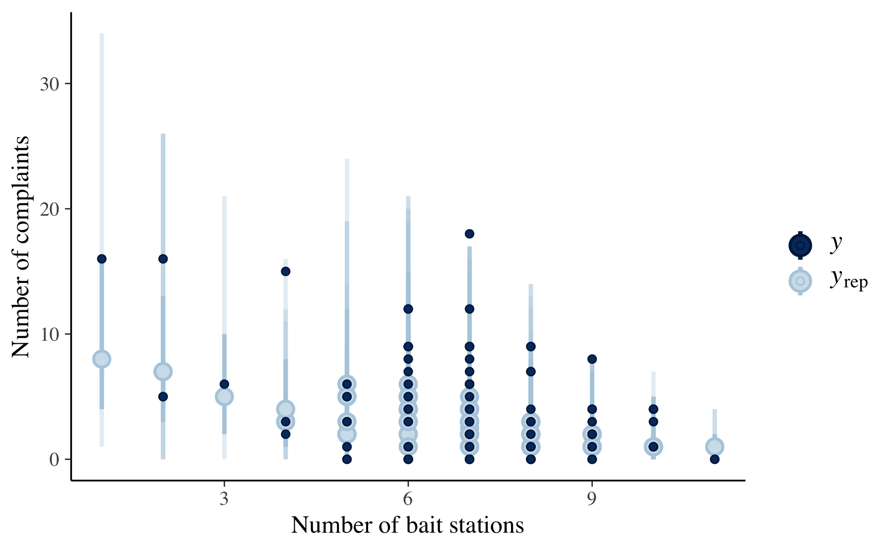
Standardized residuals: 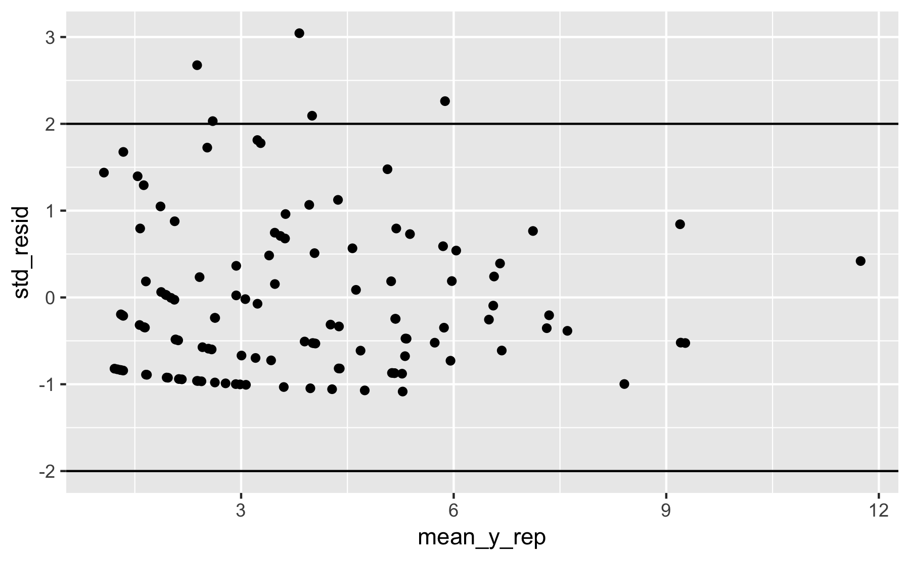
Rootogram:

Varying intercepts and varying slopes
We’ve gotten some new data that extends the number of time points for which we have observations for each building. This will let us explore how to expand the model a bit more with varying slopes in addition to the varying intercepts and also, later, also model temporal variation.
Perhaps if the levels of complaints differ by building, so does the coefficient for the effect of bait stations. We can add these varying coefficients to our model and observe the fit.
\[ \text{complaints}_{b,t} \sim \text{Neg-Binomial}(\lambda_{b,t}, \phi) \\ \lambda_{b,t} = \exp{(\eta_{b,t})} \\ \eta_{b,t} = \mu_b + \kappa_b \, \texttt{traps}_{b,t} + \text{log}\_\textrm{sq}\_\textrm{foot}_b \\ \mu_b \sim \text{normal}(\alpha + \texttt{building}\_\textrm{data} \, \zeta, \sigma_{\mu}) \\ \kappa_b \sim \text{normal}(\beta + \texttt{building}\_\textrm{data} \, \gamma, \sigma_{\kappa}) \]
Let’s compile the model.
Fit the model to data and extract the posterior draws needed for our posterior predictive checks.
To see if the model infers building-to-building differences in, we can
plot a histogram of our marginal posterior distribution for
sigma_kappa.
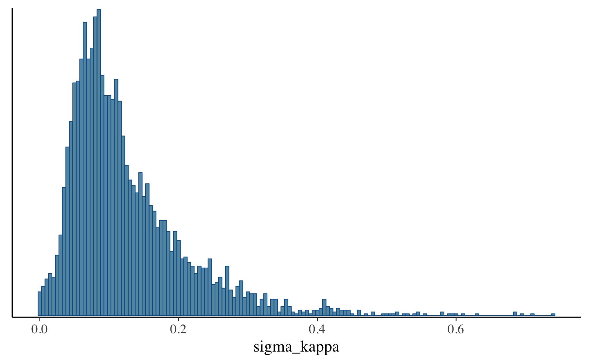
Inference for Stan model: hier_NB_regression_ncp_slopes_mod.
4 chains, each with iter=2000; warmup=1000; thin=1;
post-warmup draws per chain=1000, total post-warmup draws=4000.
mean se_mean sd 2.5% 25% 50% 75% 98% n_eff Rhat
kappa[1] -0.02 0.00 0.08 -0.14 -0.07 -0.03 0.03 0.16 1178 1
kappa[2] -0.42 0.00 0.10 -0.63 -0.48 -0.41 -0.35 -0.24 1531 1
kappa[3] -0.59 0.00 0.10 -0.79 -0.65 -0.59 -0.52 -0.39 4990 1
kappa[4] -0.22 0.00 0.07 -0.36 -0.26 -0.22 -0.18 -0.08 3892 1
kappa[5] -0.60 0.00 0.09 -0.79 -0.66 -0.60 -0.54 -0.43 4207 1
kappa[6] -0.43 0.00 0.11 -0.67 -0.49 -0.43 -0.36 -0.23 2834 1
kappa[7] -0.31 0.00 0.07 -0.44 -0.35 -0.31 -0.27 -0.18 5794 1
kappa[8] -0.23 0.00 0.15 -0.56 -0.32 -0.22 -0.13 0.05 2111 1
kappa[9] 0.08 0.00 0.06 -0.03 0.04 0.08 0.12 0.20 4785 1
kappa[10] -0.72 0.00 0.16 -1.01 -0.82 -0.73 -0.62 -0.38 1367 1
beta -0.34 0.00 0.06 -0.47 -0.38 -0.34 -0.31 -0.22 2907 1
alpha 1.40 0.01 0.31 0.73 1.21 1.42 1.60 1.99 3092 1
phi 1.61 0.00 0.19 1.27 1.48 1.60 1.73 2.02 4282 1
sigma_mu 0.50 0.02 0.41 0.01 0.18 0.40 0.73 1.50 597 1
sigma_kappa 0.13 0.00 0.09 0.02 0.07 0.10 0.16 0.35 591 1
mu[1] 0.27 0.02 0.73 -1.43 -0.13 0.37 0.77 1.46 1185 1
mu[2] 1.65 0.01 0.54 0.68 1.29 1.61 1.97 2.84 1508 1
mu[3] 2.13 0.00 0.33 1.50 1.90 2.12 2.34 2.77 5320 1
mu[4] 1.47 0.01 0.52 0.45 1.15 1.47 1.80 2.54 3998 1
mu[5] 2.39 0.01 0.42 1.59 2.10 2.38 2.68 3.24 4499 1
mu[6] 1.89 0.01 0.41 1.17 1.64 1.86 2.11 2.81 2692 1
mu[7] 2.68 0.00 0.25 2.21 2.51 2.67 2.85 3.18 5405 1
mu[8] -0.53 0.02 0.97 -2.33 -1.17 -0.57 0.06 1.47 2145 1
mu[9] 0.22 0.01 0.57 -0.87 -0.16 0.22 0.60 1.35 4682 1
mu[10] 1.81 0.03 1.08 -0.67 1.21 1.94 2.57 3.59 999 1
Samples were drawn using NUTS(diag_e) at Thu Nov 29 19:16:16 2018.
For each parameter, n_eff is a crude measure of effective sample size,
and Rhat is the potential scale reduction factor on split chains (at
convergence, Rhat=1).
While the model can’t specifically rule out zero from the posterior, it does have mass at small non-zero numbers, so we should leave in the hierarchy over \(\texttt{kappa}\). Plotting the marginal data density again, the model still looks well calibrated.
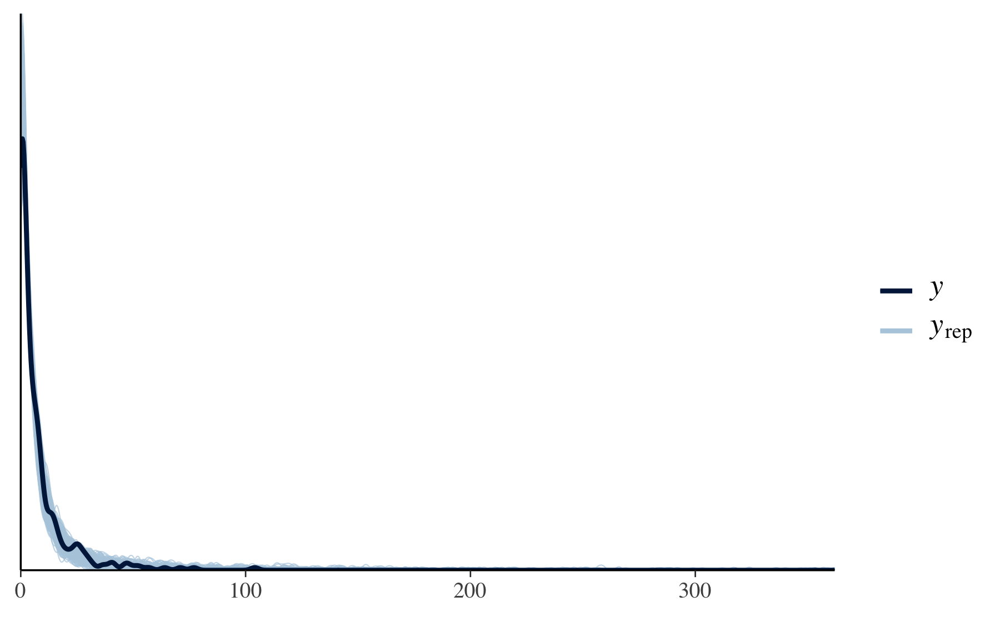
4.7 Time-varying effects and structured priors
We haven’t looked at how cockroach complaints change over time. Let’s look at whether there’s any pattern over time.
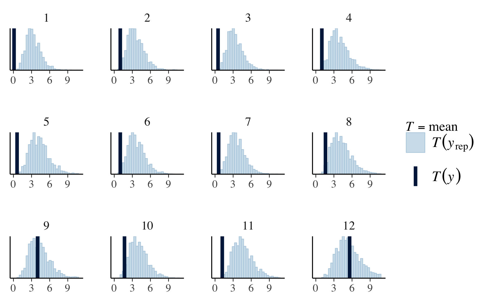
We might augment our model with a log-additive monthly effect, \(\texttt{mo}_t\).
\[ \eta_{b,t} = \mu_b + \kappa_b \, \texttt{traps}_{b,t} + \texttt{mo}_t + \text{log}\_\textrm{sq}\_\textrm{foot}_b \]
We have complete freedom over how to specify the prior for \(\texttt{mo}_t\). There are several competing factors for how the number of complaints might change over time. It makes sense that there might be more roaches in the environment during the summer, but we might also expect that there is more roach control in the summer as well. Given that we’re modeling complaints, maybe after the first sighting of roaches in a building, residents are more vigilant, and thus complaints of roaches would increase.
This can be a motivation for using an autoregressive prior for our monthly effects. The model is as follows:
\[ \texttt{mo}_t \sim \text{normal}(\rho \, \texttt{mo}_{t-1}, \sigma_\texttt{mo}) \\ \equiv \\ \texttt{mo}_t = \rho \, \texttt{mo}_{t-1} + \epsilon_t , \quad \epsilon_t \sim \text{normal}(0, \sigma_\texttt{mo}) \\ \quad \rho \in [-1,1] \]
This equation says that the monthly effect in month \(t\) is directly related to the last month’s monthly effect. Given the description of the process above, it seems like there could be either positive or negative associations between the months, but there should be a bit more weight placed on positive \(\rho\)s, so we’ll put an informative prior that pushes the parameter \(\rho\) towards 0.5.
Before we write our prior, however, we have a problem: Stan doesn’t implement any densities that have support on \([-1,1]\). We can use variable transformation of a raw variable defined on \([0,1]\) to to give us a density on \([-1,1]\). Specifically,
\[ \rho_{\text{raw}} \in [0, 1] \\ \rho = 2 * \rho_{\text{raw}} - 1 \]
Then we can put a beta prior on \(\rho_\text{raw}\) to push our estimate towards 0.5.
One further wrinkle is that we have a prior for \(\texttt{mo}_t\) that depends on \(\texttt{mo}_{t-1}\). That is, we are working with the conditional distribution of \(\texttt{mo}_t\) given \(\texttt{mo}_{t-1}\). But what should we do about the prior for \(\texttt{mo}_1\), for which we don’t have a previous time period in the data?
We need to work out the marginal distribution of the first observation. Thankfully we can use the fact that AR models are stationary, so \(\text{Var}(\texttt{mo}_t) = \text{Var}(\texttt{mo}_{t-1})\) and \(\mbox{E}(\texttt{mo}_t) = \mbox{E}(\texttt{mo}_{t-1})\) for all \(t\). Therefore the marginal distribution of \(\texttt{mo}_1\) is the same as the marginal distribution of any \(\texttt{mo}_t\).
First we derive the marginal variance of \(\texttt{mo}_{t}\).
\[ \text{Var}(\texttt{mo}_t) = \text{Var}(\rho \texttt{mo}_{t-1} + \epsilon_t) \\ \text{Var}(\texttt{mo}_t) = \text{Var}(\rho \texttt{mo}_{t-1}) + \text{Var}(\epsilon_t) \] where the second line holds by independence of \(\epsilon_t\) and \(\epsilon_{t-1})\). Then, using the fact that \(Var(cX) = c^2Var(X)\) for a constant \(c\) and the fact that, by stationarity, \(\textrm{Var}(\texttt{mo}_{t-1}) = \textrm{Var}(\texttt{mo}_{t})\), we then obtain:
\[ \text{Var}(\texttt{mo}_t) = \rho^2 \text{Var}( \texttt{mo}_{t}) + \sigma_\texttt{mo}^2 \\ \text{Var}(\texttt{mo}_t) = \frac{\sigma_\texttt{mo}^2}{1 - \rho^2} \]
For the mean of \(\texttt{mo}_t\) things are a bit simpler:
\[ \mbox{E}(\texttt{mo}_t) = \mbox{E}(\rho \, \texttt{mo}_{t-1} + \epsilon_t) \\ \mbox{E}(\texttt{mo}_t) = \mbox{E}(\rho \, \texttt{mo}_{t-1}) + \mbox{E}(\epsilon_t) \]
Since \(\mbox{E}(\epsilon_t) = 0\) by assumption we have
\[ \mbox{E}(\texttt{mo}_t) = \mbox{E}(\rho \, \texttt{mo}_{t-1}) + 0\\ \mbox{E}(\texttt{mo}_t) = \rho \, \mbox{E}(\texttt{mo}_{t}) \\ \mbox{E}(\texttt{mo}_t) - \rho \mbox{E}(\texttt{mo}_t) = 0 \\ \mbox{E}(\texttt{mo}_t) = 0/(1 - \rho) \]
which for \(\rho \neq 1\) yields \(\mbox{E}(\texttt{mo}_{t}) = 0\).
We now have the marginal distribution for \(\texttt{mo}_{t}\), which, in our case, we will use for \(\texttt{mo}_1\). The full AR(1) specification is then:
\[ \texttt{mo}_1 \sim \text{normal}\left(0, \frac{\sigma_\texttt{mo}}{\sqrt{1 - \rho^2}}\right) \\ \texttt{mo}_t \sim \text{normal}\left(\rho \, \texttt{mo}_{t-1}, \sigma_\texttt{mo}\right) \ \forall t > 1 \]
In the interest of brevity, we won’t go on expanding the model, though we certainly could. What other information would help us understand the data generating process better? What other aspects of the data generating process might we want to capture that we’re not capturing now?
As usual, we run through our posterior predictive checks.
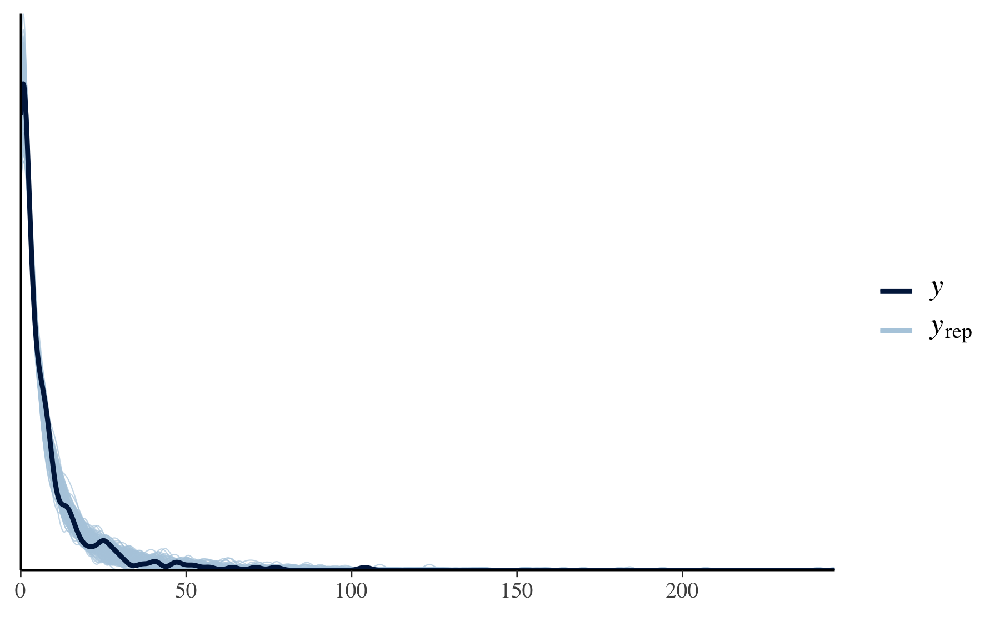
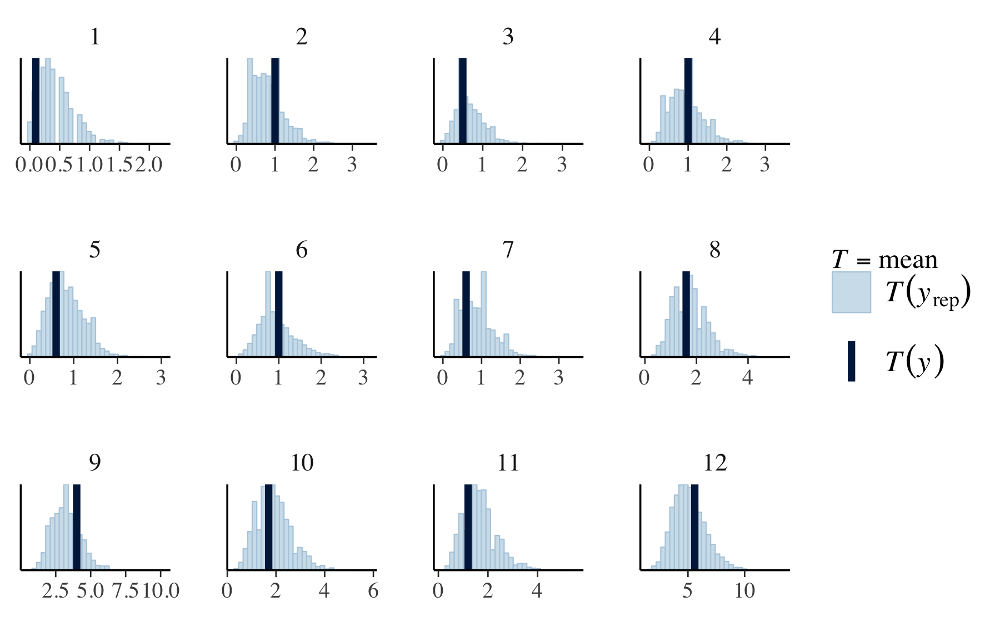
Our monthly random intercept has captured a monthly pattern across all the buildings. We can also compare the prior and posterior for the autoregressive parameter to see how much we’ve learned. Here are two different ways of comparing the prior and posterior visually:
 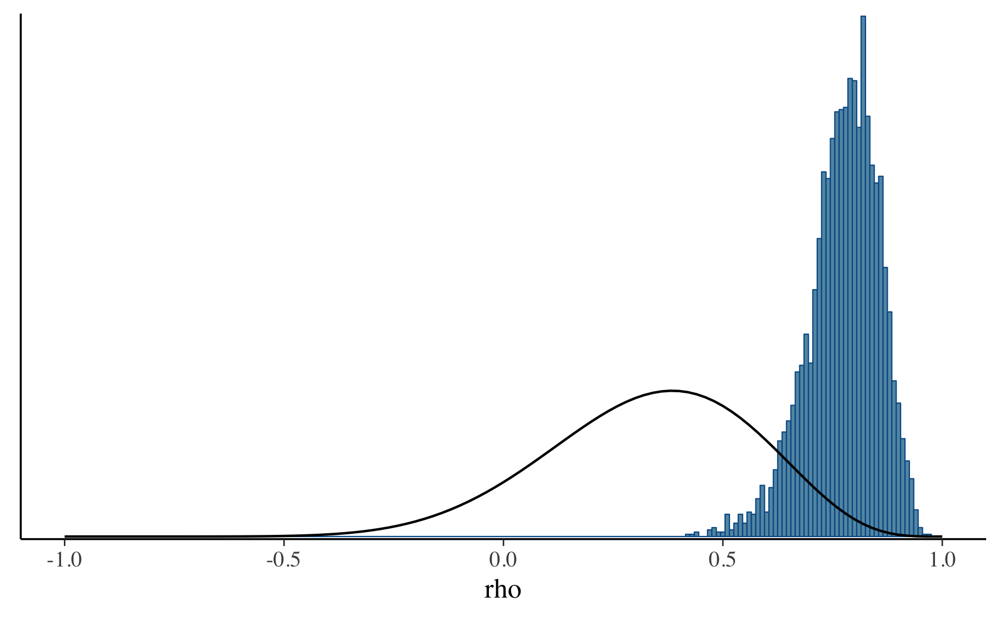
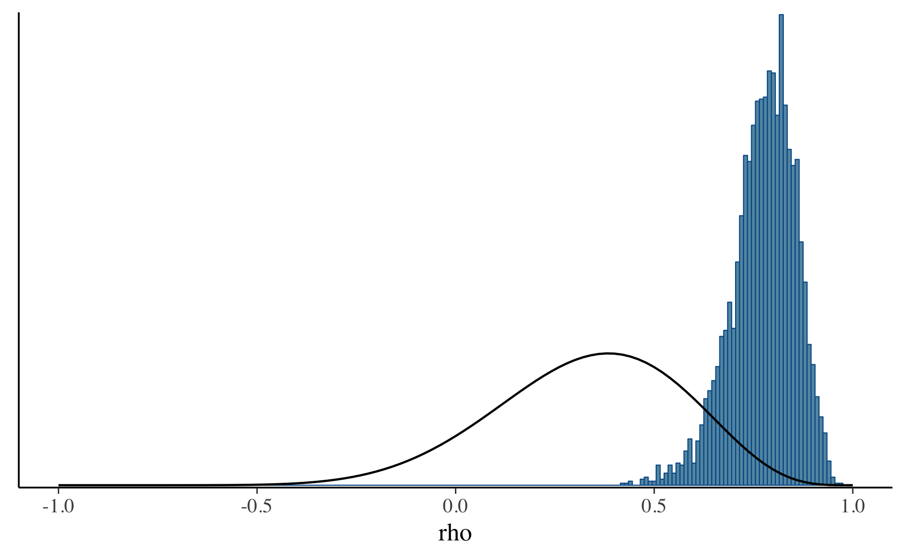
Inference for Stan model: hier_NB_regression_ncp_slopes_mod_mos.
4 chains, each with iter=2000; warmup=1000; thin=1;
post-warmup draws per chain=1000, total post-warmup draws=4000.
mean se_mean sd 2.5% 25% 50% 75% 98% n_eff Rhat
rho 0.78 0.00 0.08 0.59 0.73 0.78 0.83 0.91 1361 1
sigma_mu 0.31 0.01 0.24 0.01 0.12 0.27 0.44 0.93 1389 1
sigma_kappa 0.09 0.00 0.05 0.01 0.05 0.08 0.11 0.22 958 1
gamma[1] -0.18 0.00 0.11 -0.40 -0.25 -0.18 -0.12 0.03 2085 1
gamma[2] 0.12 0.00 0.07 -0.03 0.07 0.11 0.16 0.27 1913 1
gamma[3] 0.11 0.00 0.15 -0.18 0.02 0.10 0.19 0.40 2210 1
gamma[4] 0.00 0.00 0.06 -0.13 -0.04 0.00 0.03 0.12 2334 1
Samples were drawn using NUTS(diag_e) at Thu Nov 29 19:19:02 2018.
For each parameter, n_eff is a crude measure of effective sample size,
and Rhat is the potential scale reduction factor on split chains (at
convergence, Rhat=1).
It looks as if our model finally generates a reasonable posterior predictive distribution for all numbers of bait stations, and appropriately captures the tails of the data generating process.
4.8 Using our model: Cost forecasts
Our model seems to be fitting well, so now we will go ahead and use the model to help us make a decision about how many bait stations to put in our buildings. We’ll make a forecast for 6 months forward.
An important input to the revenue model is how much revenue is lost due to each complaint. The client has a policy that for every 10 complaints, they’ll call an exterminator costing the client $100, so that’ll amount to $10 per complaint.
Below we’ve generated revenue curves for the buildings. These charts will give us precise quantification of our uncertainty around our revenue projections at any number of bait stations for each building.
A key input to our analysis will be the cost of installing bait stations. We’re simulating the number of complaints we receive over the course of a year, so we need to understand the cost associated with maintaining each bait station over the course of a year. There’s the cost attributed to the raw bait station, which is the plastic housing and the bait material, a peanut-buttery substance that’s injected with insecticide. The cost of maintaining one bait station for a year plus monthly replenishment of the bait material is about $20.
We’ll also need labor for maintaining the bait stations, which need to be serviced every two months. If there are fewer than five bait stations, our in-house maintenance staff can manage the stations (about one hour of work every two months at $20/hour), but above five bait stations we need to hire outside pest control to help out. They’re a bit more expensive, so we’ve put their cost at $30 / hour. Each five bait stations should require an extra person-hour of work, so that’s factored in as well. The marginal person-person hours above five bait stations are at the higher pest-control labor rate.
We can now plot curves with number of bait stations on the x-axis and profit/loss forecasts and uncertainty intervals on the y-axis.

We can can see that the optimal number of bait stations differs by building.
Left as an exercise for the reader:
How would we build a revenue curve for a new building?
Let’s say our utility function is revenue. If we wanted to maximize expected revenue, we can take expectations at each station count for each building, and choose the trap numbers that maximizes expected revenue. This will be called a maximum revenue strategy. How can we generate the distribution of portfolio revenue (the sum of revenue across all the buildings) under the maximum revenue strategy from the the draws of
rev_predwe already have?
4.9 Gaussian process instead of AR(1)
Joint density for AR(1) process
We can derive the joint distribution for the AR(1) process before we move to the Gaussian process (GP) which will give us a little more insight into what a GP is. Remember that we’ve specified the AR(1) prior as:
\[ \begin{aligned} \texttt{mo}_1 & \sim \text{normal}\left(0, \frac{\sigma_\texttt{mo}}{\sqrt{1 - \rho^2}}\right) \\ \texttt{mo}_t & \sim \text{normal}\left(\rho \, \texttt{mo}_{t-1}, \sigma_\texttt{mo}\right) \forall t > 1 \end{aligned} \]
Rewriting our process in terms of the errors will make the derivation of the joint distribution clearer
\[ \begin{aligned} \texttt{mo}_1 & \sim \text{normal}\left(0, \frac{\sigma_\texttt{mo}}{\sqrt{1 - \rho^2}}\right) \\ \texttt{mo}_t & = \rho \, \texttt{mo}_{t-1} + \sigma_\texttt{mo}\epsilon_t \\ \epsilon_t & \sim \text{normal}\left(0, 1\right) \end{aligned} \]
Given that the first term \(\texttt{mo}_1\) is normally distributed, and
the other terms are sums of normal random variables, jointly the
vector, mo, with the \(t\)-th element equally the scalar
\(\texttt{mo}_t\), is multivariate normal, with mean zero (which we
derived above). More formally, if we have a vector \(x \in \mathbb{R}^M\) which is multivariate normal,
\(x \sim \text{multiviarate normal}(0, \Sigma)\)
and we left-multiply \(x\) by a nonsingular matrix
\(L \in \mathbb{R}^{M\times M}\),
\(y = Lx \sim \text{multivariate normal}(0, L\Sigma L^T)\).
We can use this fact to show that our
vector mo is jointly multivariate normal.
Just as before with the noncentered parameterization, we’ll be taking
a vector \(\texttt{mo}\_\textrm{raw} \in \mathbb{R}^M\) in which each element is
univariate \(\text{normal}(0,1)\) and transforming it into mo, but
instead of doing the transformation with scalar transformations as in
the section Time varying effects and structured priors, we’ll do
it with linear algebra operations. The trick is that by specifying
each element of \(\texttt{mo}\_\textrm{raw}\) to be distributed
\(\text{normal}(0,1)\) we are implicitly defining
\(\texttt{mo}\_\textrm{raw} \sim \text{multivariate normal}(0, I_M)\),
where \(I_M\) is the identity matrix of dimension \(M \times M\).
Then we do a linear transformation
using a matrix \(L\) and assign the result to mo like
\(\texttt{mo} = L*\texttt{mo}\_\textrm{raw}\) so
\(\texttt{mo} \sim \text{multivariate normal}(0, LI_M L^T)\)
and \(LI_M L^T = LL^T\).
Consider the case where we have three elements in mo and we want to
make figure out the form for \(L\).
The first element of mo is fairly straightforward, because it
mirrors our earlier parameterization of the AR(1) prior. The only
difference is that we’re explicitly adding the last two terms of
mo_raw into the equation so we can use matrix algebra for our
transformation.
\[
\texttt{mo}_1
= \frac{\sigma_{\texttt{mo}}}{\sqrt{1 - \rho^2}}
\times \texttt{mo}\_\textrm{raw}_1
+ 0 \times \texttt{mo}\_\textrm{raw}_2
+ 0 \times \texttt{mo}\_\textrm{raw}_3
\]
The second element is a bit more complicated:
\[ \begin{aligned} \texttt{mo}_2 & = \rho \texttt{mo}_1 + \sigma_{\texttt{mo}}\,\texttt{mo}\_\textrm{raw}_2 + 0 \times \texttt{mo}\_\textrm{raw}_3 \\ & = \rho \left( \frac{\sigma_{\texttt{mo}}}{\sqrt{1 - \rho^2}} \times \texttt{mo}\_\textrm{raw}_1 \right) + \sigma_{\texttt{mo}}\,\texttt{mo}\_\textrm{raw}_2 + 0 \times \texttt{mo}\_\textrm{raw}_3 \\[5pt] & = \frac{\rho \sigma_{\texttt{mo}}} {\sqrt{1 - \rho^2}} \times \texttt{mo}\_\textrm{raw}_1 + \sigma_{\texttt{mo}}\,\texttt{mo}\_\textrm{raw}_2 + 0 \times \texttt{mo}\_\textrm{raw}_3 \end{aligned} \]
While the third element will involve all three terms
\[ \begin{aligned} \texttt{mo}_3 & = \rho \, \texttt{mo}_2 + \sigma_{\texttt{mo}}\,\texttt{mo}\_\textrm{raw}_3 \\ & = \rho \left( \frac{\rho \sigma_{\texttt{mo}}}{\sqrt{1 - \rho^2}} \times\texttt{mo}\_\textrm{raw}_1 + \sigma_{\texttt{mo}}\,\texttt{mo}\_\textrm{raw}_2 \right) + \sigma_{\texttt{mo}} \texttt{mo}\_\textrm{raw}_3 \\[5pt] & = \frac{\rho^2 \sigma_{\texttt{mo}}}{\sqrt{1 - \rho^2}} \times \texttt{mo}\_\textrm{raw}_1 + \rho \, \sigma_{\texttt{mo}}\,\texttt{mo}\_\textrm{raw}_2 + \sigma_{\texttt{mo}}\,\texttt{mo}\_\textrm{raw}_3 \end{aligned} \]
Writing this all together:
\[ \begin{aligned} \texttt{mo}_1 & = \frac{\sigma_{\texttt{mo}}}{\sqrt{1 - \rho^2}} \times \texttt{mo}\_\textrm{raw}_1 + 0 \times \texttt{mo}\_\textrm{raw}_2 + 0 \times \texttt{mo}\_\textrm{raw}_3 \\[3pt] \texttt{mo}_2 & = \frac{\rho \sigma_{\texttt{mo}}}{\sqrt{1 - \rho^2}} \times \texttt{mo}\_\textrm{raw}_1 + \sigma_{\texttt{mo}}\,\texttt{mo}\_\textrm{raw}_2 + 0 \times \texttt{mo}\_\textrm{raw}_3 \\[3pt] \texttt{mo}_3 & = \frac{\rho^2 \sigma_{\texttt{mo}}}{\sqrt{1 - \rho^2}} \times \texttt{mo}\_\textrm{raw}_1 + \rho \, \sigma_{\texttt{mo}}\,\texttt{mo}\_\textrm{raw}_2 + \sigma_{\texttt{mo}}\,\texttt{mo}\_\textrm{raw}_3 \end{aligned} \]
Separating this into a matrix of coefficients \(L\) and the vector mo_raw:
\[ \texttt{mo} = \begin{bmatrix} \sigma_\texttt{mo} / \sqrt{1 - \rho^2} & 0 & 0 \\ \rho \sigma_\texttt{mo} / \sqrt{1 - \rho^2} & \sigma_\texttt{mo} & 0 \\ \rho^2 \sigma_\texttt{mo} / \sqrt{1 - \rho^2} & \rho \,\sigma_\texttt{mo} & \sigma_\texttt{mo} \end{bmatrix} \times \texttt{mo}\_\textrm{raw} \]
If we multiply \(L\) on the right by its transpose \(L^T\), we’ll get
expressions for the covariance matrix of our multivariate random
vector mo:
\[ \begin{bmatrix} \sigma_\texttt{mo} / \sqrt{1 - \rho^2} & 0 & 0 \\ \rho \sigma_\texttt{mo} / \sqrt{1 - \rho^2} & \sigma_\texttt{mo} & 0 \\ \rho^2 \sigma_\texttt{mo} / \sqrt{1 - \rho^2} & \rho \,\sigma_\texttt{mo} & \sigma_\texttt{mo} \end{bmatrix} \times \begin{bmatrix} \sigma_\texttt{mo} / \sqrt{1 - \rho^2} & \rho \sigma_\texttt{mo} / \sqrt{1 - \rho^2} & \rho^2 \sigma_\texttt{mo} / \sqrt{1 - \rho^2} \\ 0 & \sigma_\texttt{mo} & \rho \,\sigma_\texttt{mo} \\ 0 & 0 & \sigma_\texttt{mo} \end{bmatrix} \]
which results in:
\[ \begin{bmatrix} \sigma^2_\texttt{mo} / (1 - \rho^2) & \rho \, \sigma^2_\texttt{mo} / (1 - \rho^2) & \rho^2 \, \sigma^2_\texttt{mo} / (1 - \rho^2) \\ \rho \, \sigma^2_\texttt{mo} / (1 - \rho^2) & \sigma^2_\texttt{mo} / (1 - \rho^2) & \rho \, \sigma^2_\texttt{mo} / (1 - \rho^2) \\ \rho^2 \sigma^2_\texttt{mo} / (1 - \rho^2) & \rho \, \sigma^2_\texttt{mo} / (1 - \rho^2) & \sigma^2_\texttt{mo} / (1 - \rho^2) \end{bmatrix} \] We can simplify this result by dividing the matrix by \(\sigma^2_\texttt{mo} / (1 - \rho^2)\) to get
\[ \begin{bmatrix} 1 & \rho & \rho^2 \\ \rho & 1 & \rho \\ \rho^2 & \rho & 1 \end{bmatrix} \]
This should generalize to higher dimensions pretty easily. We could
replace the Stan code in lines 59 to 63 in
stan/hier_NB_regression_ncp_slopes_mod_mos.stan with the following:
vector[M] mo;
{
matrix[M,M] A = rep_matrix(0, M, M);
A[1,1] = sigma_mo / sqrt(1 - rho^2);
for (m in 2:M)
A[m,1] = rho^(m-1) * sigma_mo / sqrt(1 - rho^2);
for (m in 2:M) {
A[m,m] = sigma_mo;
for (i in (m + 1):M)
A[i,m] = rho^(i-m) * sigma_mo;
}
mo = A * mo_raw;
}The existing Stan code in lines 59 to 63 is doing the exact same calculations but more efficiently.
Cholesky decomposition
If we only knew the covariance matrix of our process, say a matrix
called \(\Sigma\), and we had a way of decomposing \(\Sigma\) into \(L L^T\), then we wouldn’t need to write out the equation for the
vector. Luckily, there is a matrix decomposition called the Cholesky
decomposition that does just that. The Stan function for the
composition is called cholesky_decompose. Instead of writing out the
explicit equation, we could do the following:
vector[M] mo;
{
mo = cholesky_decompose(Sigma) * mo_raw;
}provided we’ve defined Sigma appropriately elsewhere in the
transformed parameter block. The matrix \(L\) is lower triangular; that
is, all elements in the upper right triangle of the matrix are zero.
We’ve already derived the covariance matrix Sigma for the
three-dimensional AR(1) process above by explicitly calculating \(L L^T\), but we can do so using the rules of covariance and the way our
process is defined. We already know that each element of
\(\texttt{mo}_t\) has marginal variance \(\sigma^2_\texttt{mo} / (1 - \rho^2)\), but we don’t know the covariance of \(\texttt{mo}_t\) and
\(\texttt{mo}_{t+h}\). We can do so recursively. First we derive the
covariance for two elements of \(\texttt{mo}_t\) separated by one month:
\[ \text{Cov}(\texttt{mo}_{t+1},\texttt{mo}_{t}) = \text{Cov}(\rho \, \texttt{mo}_{t} + \sigma_\texttt{mo}\epsilon_{t+1},\texttt{mo}_{t}) \\ \text{Cov}(\texttt{mo}_{t+1},\texttt{mo}_{t}) = \rho \text{Cov}(\texttt{mo}_{t},\texttt{mo}_{t}) + \sigma_\texttt{mo}\text{Cov}(\epsilon_{t+1},\texttt{mo}_{t}) \\ \text{Cov}(\texttt{mo}_{t+1},\texttt{mo}_{t}) = \rho \text{Var}(\texttt{mo}_t) + 0 \]
Then we define the covariance for \(\text{Cov}(\texttt{mo}_{t+h},\texttt{mo}_{t})\) in terms of \(\text{Cov}(\texttt{mo}_{t+h-1},\texttt{mo}_{t})\)
\[ \text{Cov}(\texttt{mo}_{t+h},\texttt{mo}_{t}) = \text{Cov}(\rho \, \texttt{mo}_{t+h-1} + \sigma_\texttt{mo}\epsilon_{t+h},\texttt{mo}_{t}) \\ \text{Cov}(\texttt{mo}_{t+h},\texttt{mo}_{t}) = \rho \, \text{Cov}(\texttt{mo}_{t+h-1},\texttt{mo}_{t}) \\ \] Which we can use to recursively get at the covariance we need:
\[ \text{Cov}(\texttt{mo}_{t+h},\texttt{mo}_{t}) = \rho \, \text{Cov}(\texttt{mo}_{t+h-1},\texttt{mo}_{t}) \\ \text{Cov}(\texttt{mo}_{t+h},\texttt{mo}_{t}) = \rho \,( \rho \, \text{Cov}(\texttt{mo}_{t+h-2},\texttt{mo}_{t}) ) \\ \dots \\ \text{Cov}(\texttt{mo}_{t+h},\texttt{mo}_{t}) = \rho^h \, \text{Cov}(\texttt{mo}_{t},\texttt{mo}_{t}) \\ \text{Cov}(\texttt{mo}_{t+h},\texttt{mo}_{t}) = \rho^h \, \sigma_\texttt{mo}^2/(1 - \rho^2) \\ \]
Writing this in Stan code to replace lines 59 to 63 in
stan/hier_NB_regression_ncp_slopes_mod_mos.stan we would get:
vector[M] mo;
{
matrix[M,M] Sigma;
for (m in 1:M) {
Sigma[m,m] = 1.0;
for (i in (m + 1):M) {
Sigma[i,m] = rho^(i - m);
Sigma[m,i] = Sigma[i,m];
}
}
Sigma = Sigma * sigma_mo^2 / (1 - rho^2);
mo = cholesky_decompose(Sigma) * mo_raw;
}Extension to Gaussian processes
The prior we defined for mo is strictly speaking a Gaussian
process. It is a stochastic process that is distributed as jointly
multivariate normal for any finite value of \(M\). Formally, we could
write the above prior for mo like so:
\[ \begin{aligned} \sigma_\texttt{mo} & \sim \text{normal}(0, 1) \\ \rho & \sim \text{GenBeta}(-1,1,10, 5) \\ \texttt{mo}_t & \sim \text{GP}\left( 0, K(t | \sigma_\texttt{mo},\rho) \right) \\ \end{aligned} \]
The notation \(K(t | \sigma_\texttt{mo},\rho)\) defines the covariance matrix of the process over the domain \(t\), which is months.
In other words:
\[ \text{Cov}(\texttt{mo}_t,\texttt{mo}_{t+h}) = k(t, t+h | \sigma_\texttt{mo}, \rho) \]
We’ve already derived the covariance for our process. What if we want
to use a different definition of Sigma?
As the above example shows defining a proper covariance matrix will yield a proper multivariate normal prior on a parameter. We need a way of defining a proper covariance matrix. These are symmetric positive definite matrices. It turns out there is a class of functions that define proper covariance matrices, called kernel functions. These functions are applied elementwise to construct a covariance matrix, \(K\): \[ K_{[t,t+h]} = k(t, t+h | \theta) \] where \(\theta\) are the hyperparameters that define the behavior of covariance matrix.
One such function is called the exponentiated quadratic function,
and it happens to be implemented in Stan as cov_exp_quad. The
function is defined as:
\[ \begin{aligned} k(t, t+h | \theta) & = \alpha^2 \exp \left( - \dfrac{1}{2\ell^2} ((t+h) - t)^2 \right) \\ & = \alpha^2 \exp \left( - \dfrac{h^2}{2\ell^2} \right) \end{aligned} \]
The exponentiated quadratic kernel has two components to theta, \(\alpha\), the marginal standard deviation of the stochastic process \(f\) and \(\ell\), the process length sscale.
The length scale defines how quickly the covariance decays between
time points, with large values of \(\ell\) yielding a covariance that
decays slowly, and with small values of \(\ell\) yielding a covariance
that decays rapidly. It can be seen interpreted as a measure of how
nonlinear the mo process is in time.
The marginal standard deviation defines how large the fluctuations are on the output side, which in our case is the number of roach complaints per month across all buildings. It can be seen as a scale parameter akin to the scale parameter for our building-level hierarchical intercept, though it now defines the scale of the monthly deviations.
This kernel’s defining quality is its smoothness; the function is infinitely differentiable. That will present problems for our example, but if we add some noise the diagonal of our covariance matrix, the model will fit well.
\[ k(t, t+h | \theta) = \alpha^2 \exp \left( - \dfrac{h^2}{2\ell^2} \right) + \text{if } h = 0, \, \sigma^2_\texttt{noise} \text{ else } 0 \]
Compiling the Gaussian process model
Fitting the Gaussian process model to data
Examining the fit
Let’s look at the prior vs. posterior for the Gaussian process length scale parameter:

From the plot above it only looks like we learned a small amount,
however we can see a bigger difference between the prior and posterior
if we consider how much we learned about the ratio of sigma_gp to
the length scale gp_len:

This is a classic problem with Gaussian processes. Marginally, the length scale parameter isn’t well identified by the data, but jointly the length scale and the marginal standard deviation are well identified.
And let’s compare the estimates for the time varying parameters between the AR(1) and GP. In this case the posterior mean of the time trend is essentially the same for the AR(1) and GP priors but the 50% uncertainty intervals are narrower for the AR(1):

The way we coded the Gaussian process also lets us plot a
decomposition of the GP into a monthly noise component (mo_noise in
the Stan code) and the underlying smoothly varying trend
(gp_exp_quad in the Stan code):
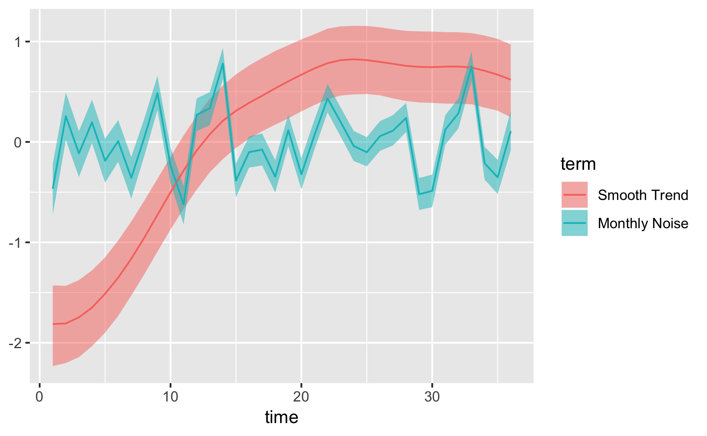